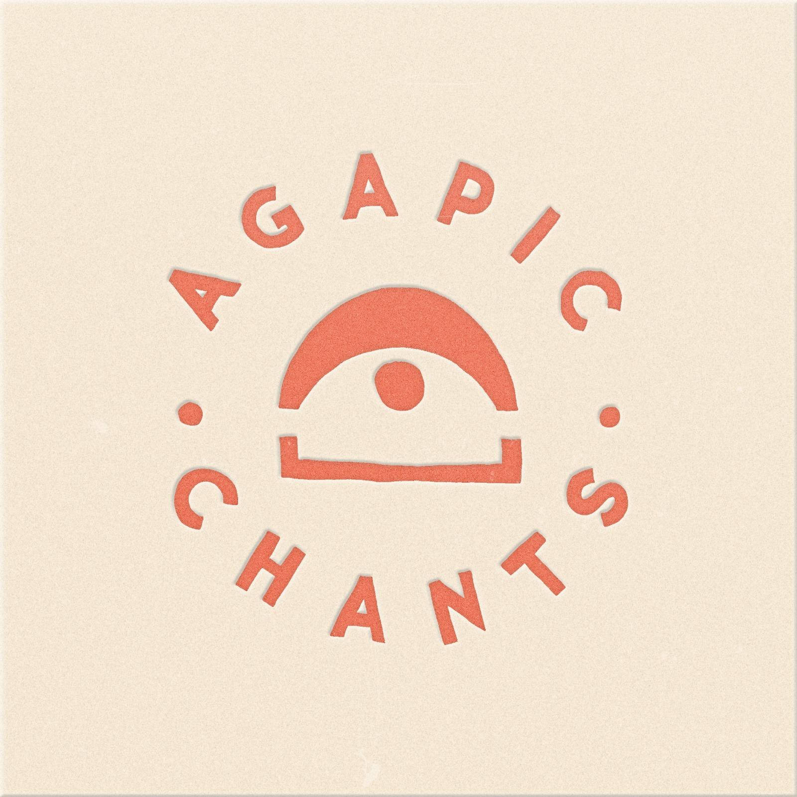
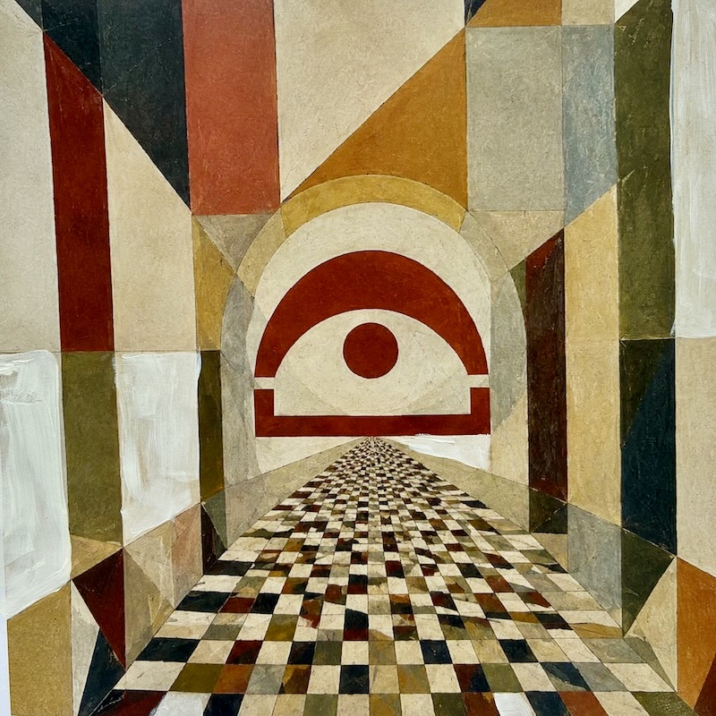
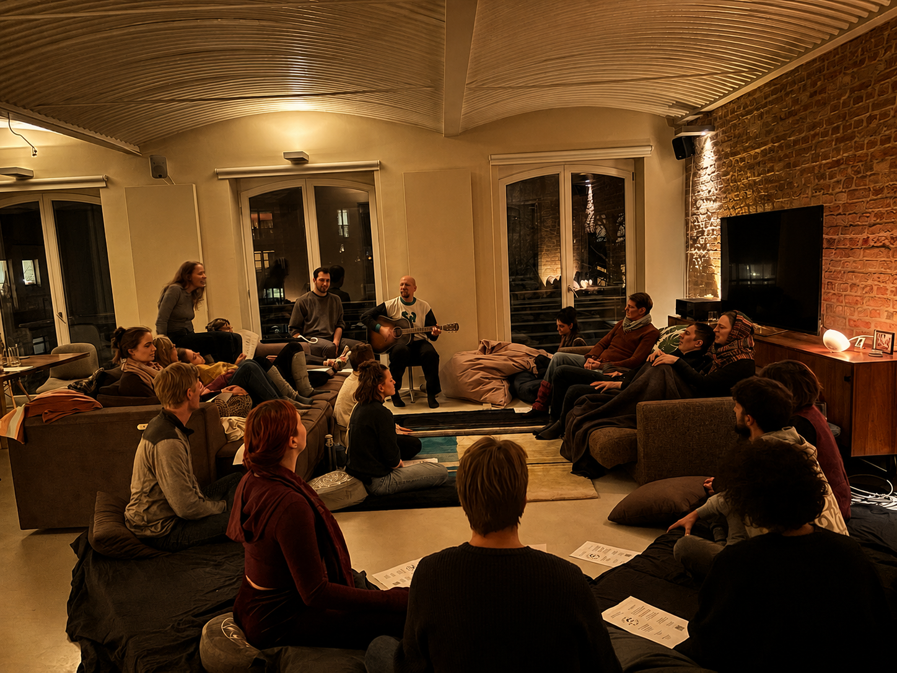
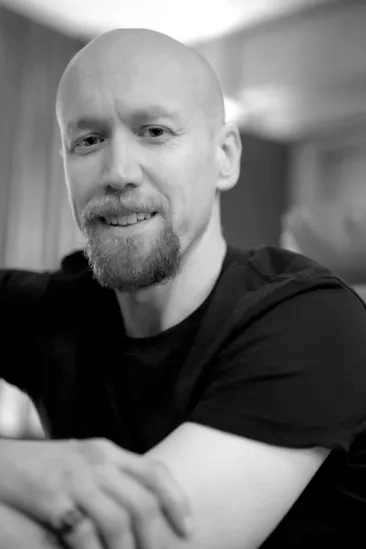
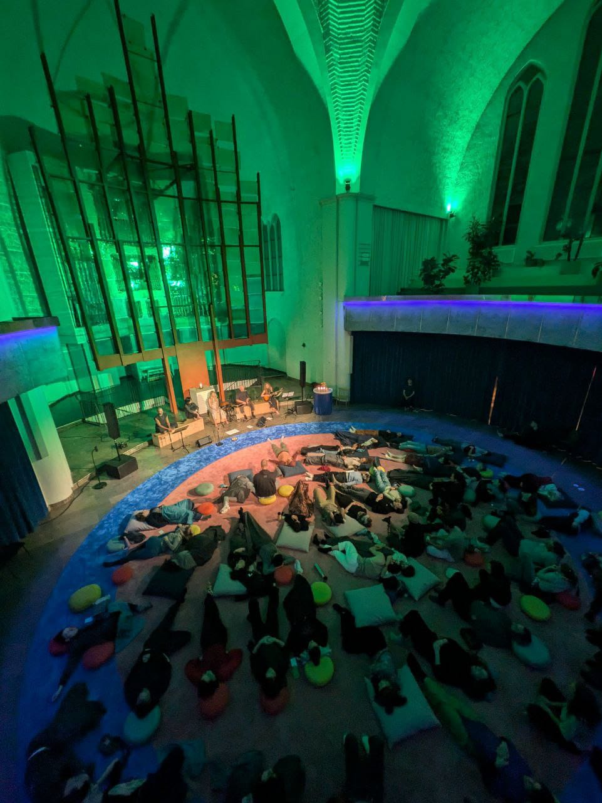

Agapic ChantsDas Leben ist voller schwerer Entscheidungen.
Diese hier ist eine fürs Herz.
Wahrscheinlich hast du ein großes Herz. Du fühlst tief, und es kümmert dich, wie groß der Abstand ist zwischen dem, wie die Dinge sind, und dem, wie sie sein sollten. So ein großes Herz ist ein Geschenk, und es kann uns ausbrennen, wenn wir nicht auch gut für uns selbst sorgen. Dieser Abend ist eine Einladung, zusammenzusitzen, gemeinsam auf das zu schauen, was uns wichtig ist, und wieder Verbindung und Ausrichtung zu finden.


Ich leite diese Abende in Wohnzimmern, Sälen und Kirchen, in Berlin und Bonn und überall, wo man mich einlädt. Wenn du gern einen bei dir hättest, fängt das genauso an wie jedes andere Treffen auch.

Wir beginnen mit gemeinsamem Singen — einfache Lieder, nichts vorzubereiten, keine Aufführung, nur Stimmen, die zueinanderfinden, bis der Raum still wird. Dann werden wir ruhig und schauen ehrlich und freundlich auf unser Leben. Was ist mir wichtig? Wo könnte ich ein bisschen mehr aus der Liebe heraus leben? Es gibt nichts zu reparieren und nichts, was du hinterher tun musst. Wir schauen einfach hin.
Wir singen noch ein bisschen, und dann gibt es eine offene Runde. Wenn dich etwas bewegt, kannst du laut sagen, wofür du dich entscheiden möchtest — egal was, egal wie klein. Der Raum sagt danke und atmet auf, denn es ist eine echte Erleichterung, wenn sich jemand entscheidet, aus der Liebe heraus zu leben. Und wenn du lieber zuhörst, ist das genauso willkommen. Dann singen wir noch einmal gemeinsam und lassen den Abend bei Tee ausklingen, mit Zeit, einfach zusammen zu sein.
Du musst nichts können und nichts vorbereiten.
Komm einfach so, wie du bist.

Herzensentscheidung kann auch einen größeren Raum füllen
Auch durch die Dunkelheit hindurch können wir einander singen hören.
Wenn sie dir etwas bedeutet haben, hilft deine Unterstützung dabei, dass noch mehr entstehen.